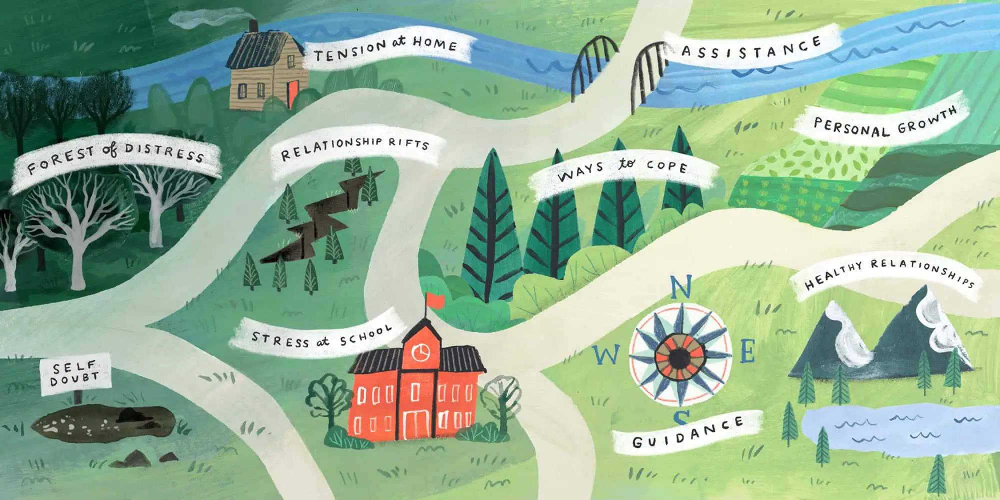
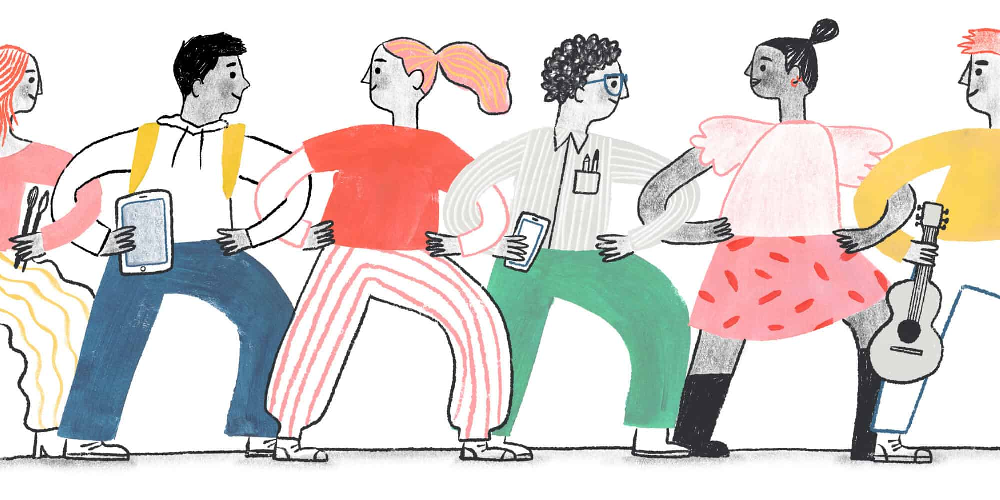

A compass on your journey to well-being

Mental health is complex, and every person’s experience is unique.
YourJourney is your one-stop hub for youth mental health in Canada. Backed by the government, our platform helps you find the right services, resources, and support — all in one place.

Understanding Mental Health
Learn about the complexity of mental health, recognize common challenges, and gain insights into how emotions, thoughts, and behaviors are interconnected.

Finding Help
Discover ways to seek professional guidance, counseling, and support resources that can help you navigate difficult moments and maintain mental well-being.

Community
Connect with peers, support groups, and local initiatives that foster understanding, connection, and shared growth on the journey toward well-being.

Wellness & Coping Tools
Explore practical strategies for integrating mental wellness into everyday routines, including self-care, healthy habits, coping apps, and mindful living practices.